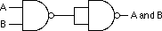

|
Table of Content | |
|
Table of Content | |
| CHAPTER
TWO: BOOLEAN ALGEBRA (Part 3) |
|
| 2.6 -
What Does This Have To Do With Computers, Anyway? 2.6.1 - Correspondence Between Electronic Circuits and Boolean Functions 2.6.2 - Combinatorial Circuits |
2.6.3 -
Sequential and Clocked Logic 2.7 - Okay, What Does It Have To Do With Programming, Then? 2.8 - Generic Boolean Functions |
| 2.6 What Does This Have To Do With Computers, Anyway? | |
Although there is a tenuous relationship between boolean functions and boolean expressions in programming languages like C or Pascal, it is fair to wonder why we're spending so much time on this material. However, the relationship between boolean logic and computer systems is much stronger. There is a one-to-one relationship between boolean functions and electronic circuits. Electrical engineers who design CPUs and other computer related circuits need to be intimately familiar with this stuff. Even if you never intend to design your own electronic circuits, understanding this relationship is important if you want to make the most of any computer system.
2.6.1 Correspondence Between Electronic Circuits and Boolean Functions
There is a one-to-one correspondence between an electrical circuits and boolean functions. For any boolean function you can design an electronic circuit and vice versa. Since boolean functions only require the AND, OR, and NOT boolean operators, we can construct any electronic circuit using these operations exclusively. The boolean AND, OR, and NOT functions correspond to the following electronic circuits, the AND, OR, and inverter (NOT) gates:
One interesting fact is that you only need a single gate type to implement any electronic circuit. This gate is the NAND gate, shown below:
To prove that we can construct any boolean function using only NAND gates, we need only show how to build an inverter (NOT), AND gate, and OR gate from a NAND (since we can create any boolean function using only AND, NOT, and OR). Building an inverter is easy, just connect the two inputs together:
Once we can build an inverter, building an AND gate is easy
- just invert the output of a NAND gate. After all, NOT (NOT (A AND B)) is
equivalent to A AND B.

Of course, this takes two NAND gates to construct a single AND gate, but no one said that circuits constructed only with NAND gates would be optimal, only that it is possible to do.
The remaining gate we need to synthesize is the logical-OR gate. We can easily construct an OR gate from NAND gates by applying DeMorgan's theorems.
(A or B)' = A' and B' DeMorgan's Theorem. A or B = (A' and B')' Invert both sides of the equation. A or B = A' nand B' Definition of NAND operation.
By applying these transformations, you get the circuit:
Now you might be wondering why we would even bother with this. After all, why not just use logical AND, OR, and inverter gates directly? There are two reasons for this. First, NAND gates are generally less expensive to build than other gates. Second, it is also much easier to build up complex integrated circuits from the same basic building blocks than it is to construct an integrated circuit using different basic gates.
Note, by the way, that it is possible to construct any logic circuit using only NOR gates. The correspondence between NAND and NOR logic is orthogonal to the correspondence between the two canonical forms appearing in this chapter (sum of minterms vs. product of maxterms). While NOR logic is useful for many circuits, most electronic designs use NAND logic. See the exercises for more examples.
A combinatorial circuit is a system containing basic boolean operations (AND, OR, NOT), some inputs, and a set of outputs. Since each output corresponds to an individual logic function, a combinatorial circuit often implements several different boolean functions. It is very important that you remember this fact - each output represents a different boolean function.
A computer's CPU is built up from various combinatorial circuits. For example, you can implement an addition circuit using boolean functions. Suppose you have two one-bit numbers, A and B. You can produce the one-bit sum and the one-bit carry of this addition using the two boolean functions:
S = AB' + A'B Sum of A and B. C = AB Carry from addition of A and B.
These two boolean functions implement a half-adder. Electrical engineers call it a half adder because it adds two bits together but cannot add in a carry from a previous operation. A full adder adds three one-bit inputs (two bits plus a carry from a previous addition) and produces two outputs: the sum and the carry. The two logic equations for a full adder are
S = A'B'C + A'BC' + AB'C' + ABC Cout = AB + AC + BC
Although these logic equations only produce a single bit result (ignoring the carry), it is easy to construct an n-bit sum by combining adder circuits:
So, as this example clearly illustrates, we can use logic functions to implement arithmetic and boolean operations.
Another common combinatorial circuit is the seven-segment decoder. This is a combinatorial circuit that accepts four inputs and determines which of the seven segments on a seven-segment LED display should be on (logic one) or off (logic zero). Since a seven segment display contains seven output values (one for each segment), there will be seven logic functions associated with the display (segment zero through segment six). See the figure below for the segment assignments.
The figure below shows the segment assignments for each of the ten decimal values.
The four inputs to each of these seven boolean functions are the four bits from a binary number in the range 0..9. Let D be the H.O. bit of this number and A be the L.O. bit of this number. Each logic function should produce a one (segment on) for a given input if that particular segment should be illuminated. For example S4 (segment four) should be on for binary values 0000, 0010, 0110, and 1000. For each value that illuminates a segment, you will have one minterm in the logic equation:
S4 = D'C'B'A' + D'C'BA' + D'CBA' + DC'B'A'.
So, as a second example, is on for values zero, two, three, five, six, seven, eight, and nine. Therefore, the logic function for S0 is
S0 = D'C'B'A' + D'C'BA' + D'C'BA + D'CB'A + D'CBA' + D'CBA + DC'B'A' + DC'B'A
You can generate the other five logic functions in a similar fashion (see the exercises).
Combinatorial circuits are the basis for many components of a basic computer system. You can construct circuits for addition, subtraction, comparison, multiplication, division, and many other operations using combinatorial logic.
2.6.3 Sequential and Clocked Logic
One major problem with combinatorial logic is that it is memoryless. In theory, all logic function outputs depend only on the current inputs. Any change in the input values is immediately reflected in the outputs. Unfortunately, computers need the ability to remember the results of past computations. This is the domain of sequential or clocked logic.
A memory cell is an electronic circuit that remembers an input value after the removal of that input value. The most basic memory unit is the set/reset flip-flop. You can construct an SR flip-flop using two NAND gates, as shown below:
The S and R inputs are normally high. If you temporarily set the S input to zero and then bring it back to one (toggle the S input), this forces the Q output to one. Likewise, if you toggle the R input from one to zero back to one, this sets the Q output to zero. The Q' input is generally the inverse of the Q output.
Note that if both S and R are one, then the Q output depends upon Q. That is, whatever Q happens to be, the top NAND gate continues to output that value. If Q was originally one, then there are two ones as inputs to the bottom flip-flop (Q nand R). This produces an output of zero (Q'). Therefore, the two inputs to the top NAND gate are zero and one. This produces the value one as an output (matching the original value for Q).
If the original value for Q was zero, then the inputs to the bottom NAND gate are Q=0 and R=1. Therefore, the output of this NAND gate is one. The inputs to the top NAND gate, therefore, are S=1 and Q'=1. This produces a zero output, the original value of Q.
Suppose Q is zero, S is zero and R is one. This sets the two inputs to the top flip-flop to one and zero, forcing the output (Q) to one. Returning S to the high state does not change the output at all. You can obtain this same result if Q is one, S is zero, and R is one. Again, this produces an output value of one. This value remains one even when S switches from zero to one. Therefore, toggling the S input from one to zero and then back to one produces a one on the output (i.e., sets the flip-flop). The same idea applies to the R input, except it forces the Q output to zero rather than to one.
There is one catch to this circuit. It does not operate properly if you set both the S and R inputs to zero simultaneously. This forces both the Q and Q' outputs to one (which is logically inconsistent). Whichever input remains zero the longest determines the final state of the flip-flop. A flip-flop operating in this mode is said to be unstable.
The only problem with the S/R flip-flop is that you must use separate inputs to remember a zero or a one value. A memory cell would be more valuable to us if we could specify the data value to remember on one input and provide a clock input to latch the input value. This type of flip-flop, the D flip-flop (for data) uses the circuit;
Assuming you fix the Q and Q' outputs to either 0/1 or 1/0, sending a clock pulse that goes from zero to one back to zero will copy the D input to the Q output. It will also copy D' to Q'. The exercises at the end of this chapter will expect you to describe this operation in detail, so study this diagram carefully.
Although remembering a single bit is often important, in most computer systems you will want to remember a group of bits. You can remember a sequence of bits by combining several D flip-flops in parallel. Concatenating flip-flops to store an n-bit value forms a register. The electronic schematic in the figure below shows how to build an eight-bit register from a set of D flip-flops.
Note that the eight D flip-flops use a common clock line. This diagram does not show the Q' outputs on the flip-flops since they are rarely required in a register.
D flip-flops are useful for building many sequential circuits above and beyond simple registers. For example, you can build a shift register that shifts the bits one position to the left on each clock pulse. A four-bit shift register appears below:
You can even build a counter, that counts the number of times the clock toggles from one to zero and back to one using flip-flops. The circuit in the figure below implements a four bit counter using D flip-flops.
Surprisingly, you can build an entire CPU with combinatorial circuits and only a few additional sequential circuits beyond these.
Once you have registers, counters, and shift registers, you can build state machines. The implementation of an algorithm in hardware using state machines is well beyond the scope of this text. However, one important point must be made with respect to such circuitry - any algorithm you can implement in software you can also implement directly in hardware. This suggests that boolean logic is the basis for computation on all modern computer systems. Any program you can write, you can specify as a sequence of boolean equations.
Of course, it is much easier to specify a solution to a programming problem using languages like Pascal, C, or even assembly language than it is to specify the solution using boolean equations. Therefore, it is unlikely that you would ever implement an entire program using a set of state machines and other logic circuitry. Nevertheless, there are times when a hardware implementation is better. A hardware solution can be one, two, three, or more orders of magnitude faster than an equivalent software solution. Therefore, some time critical operations may require a hardware solution.
A more interesting fact is that the converse of the above statement is also true. Not only can you implement all software functions in hardware, but it is also possible to implement all hardware functions in software. This is an important revelation because many operations you would normally implement in hardware are much cheaper to implement using software on a microprocessor. Indeed, this is a primary use of assembly language in modern systems - to inexpensively replace a complex electronic circuit. It is often possible to replace many tens or hundreds of dollars of electronic components with a single $25 microcomputer chip. The whole field of embedded systems deals with this very problem. Embedded systems are computer systems embedded in other products. For example, most microwave ovens, TV sets, video games, CD players, and other consumer devices contain one or more complete computer systems whose sole purpose is to replace a complex hardware design. Engineers use computers for this purpose because they are less expensive and easier to design with than traditional electronic circuitry.
You can easily design software that reads switches (input variables) and turns on motors, LEDs or lights, locks or unlocks a door, etc. (output functions). To write such software, you will need an understanding of boolean functions and how to implement such functions in software.
Of course, there is one other reason for studying boolean
functions, even if you never intend to write software intended for an embedded system or
write software that manipulates real-world devices. Many high level languages process
boolean expressions (e.g., those expressions that control an if statement or while
loop). By applying transformations like DeMorgan's theorems or a mapping optimization it
is often possible to improve the performance of high level language code. Therefore,
studying boolean functions is important even if you never intend to design an electronic
circuit. It can help you write better code in a traditional programming language.
For example, suppose you have the following statement in Pascal:
if ((x=y) and (a <> b)) or ((x=y) and (c <= d)) then SomeStmt;
You can use the distributive law to simplify this to:
if ((x=y) and ((a <> b) or (c <= d)) then SomeStmt;
Likewise, we can use DeMorgan's theorem to reduce
while (not((a=b) and (c=d)) do Something;
to
while (a <> b) or (c <> d) do Something;
For a specific application, you can create a logic function that achieves some specific result. Suppose, however, that you wanted to write a program to simulate any possible boolean function? For example, on the companion diskette, there is a program that lets you enter an arbitrary boolean function with one to four different variables. This program will read the inputs and produce and necessary function results. Since the number of unique four variable functions is large (65,536, to be exact), it is not practical to include a specific solution for each one in a program. What is necessary is a generic logic function, one that will compute the results for any arbitrary function. This section describes how to write such a function.
A generic boolean function of four variables requires five parameters - the four input parameters and a fifth parameter that specifies the function to compute. While there are lots of ways to specify the function to compute, we'll pass the boolean function's number as this fifth parameter.
At first glance you might wonder how we can compute a function using the function's number. However, keep in mind that the bits that make up the function's number come directly from the truth table for that function. Therefore, if we extract the bits from the function's number, we can construct the truth table for that function. Indeed, if we just select the ith bit of the function number, where i = D*8 + C*4 + B*2 +A you will get the function result for that particular value of A, B, C, and D. The following examples, in C and Pascal, show how to write such functions:
/************************************************************************/
/* */
/* This C program demonstrates how to write a generic logic function */
/* that can compute any logic function of four variables. Given C's */
/* bit manipulation operators, along with hexadecimal I/O, this is an */
/* easy task to accomplish in the C programming language. */
/* */
/************************************************************************/
#include <stdlib.h>
#include <stdio.h>
/* Generic logic function. The "Func" parameter contains the 16-bit */
/* logical function number. This is actually an encoded truth table */
/* for the function. The a, b, c, and d parameters are the inputs to */
/* the logic function. If we treat "func" as a 2x2x2x2 array of bits, */
/* this particular function selects bit "func[d,c,b,a]" from func. */
int
generic(int func, int a, int b, int c, int d)
{
/* Return the bit specified by a, b, c, and d */
return (func >> (a + b*2 + c*4 + d*8)) & 1;
}
/* Main program to drive the generic logic function written in C. */
main()
{
int func, a, b, c, d;
/* Repeat the following until the user enters zero. */
do
{
/* Get the function's number (truth table) */
printf("Enter function value (hex): ");
scanf("%x", &func);
/* If the user specified zero as the function #, stop */
/* the program. */
if (func != 0)
{
printf("Enter values for d, c, b, & a: ");
scanf("%d%d%d%d",
&d, &c, &b, &a);
printf("The result is %d\n", generic(func,a,b,c,d));
printf("Func = %x, A=%d, B=%d, C=%d, D=%d\n",
func, a, b, c, d);
}
} while (func !=0);
}
The following Pascal program is written for Standard Pascal. Standard Pascal does not provide any bit manipulation operations, so this program is lengthy since it has to simulate bits using an array of integers. Most modern Pascals (especially Turbo Pascal) provide built-in bit operations or library routines that operate on bits. This program would be much easier to write using such non-standard features.
program GenericFunc(input,output);
(* Since standard Pascal does not provide an easy way to directly man- *)
(* ipulate bits in an integer, we will simulate the function number *)
(* using an array of 16 integers. "GFTYPE" is the type of that array. *)
type
gftype = array [0..15] of integer;
var
a, b, c, d:integer;
fresult:integer;
func: gftype;
(* Standard Pascal does not provide the ability to shift integer data *)
(* to the left or right. Therefore, we will simulate a 16-bit value *)
(* using an array of 16 integers. We can simulate shifts by moving *)
(* data around in the array. *)
(* *)
(* Note that Turbo Pascal *does* provide shl and shr operators. How- *)
(* ever, this code is written to work with standard Pascal, not just *)
(* Turbo Pascal. *)
(* *)
(* ShiftLeft shifts the values in func on position to the left and in- *)
(* serts the shiftin value into "bit position" zero. *)
procedure ShiftLeft(shiftin:integer);
var i:integer;
begin
for i := 15 downto 1 do func[i] := func[i-1];
func[0] := shiftin;
end;
(* ShiftNibble shifts the data in func to the left four positions and *)
(* inserts the four bits a (L.O.), b, c, and d (H.O.) into the vacated *)
(* positions. *)
procedure ShiftNibble(d,c,b,a:integer);
begin
ShiftLeft(d);
ShiftLeft(c);
ShiftLeft(b);
ShiftLeft(a);
end;
(* ShiftRight shifts the data in func one position to the right. It *)
(* shifts a zero into the H.O. bit of the array. *)
procedure ShiftRight;
var i:integer;
begin
for i := 0 to 14 do func[i] := func[i+1];
func[15] := 0;
end;
(* ToUpper converts a lower case character to upper case. *)
procedure toupper(var ch:char);
begin
if (ch in ['a'..'z']) then ch := chr(ord(ch) - 32);
end;
(* ReadFunc reads a hexadecimal function number from the user and puts *)
(* this value into the func array (bit by bit). *)
function ReadFunc:integer;
var ch:char;
i, val:integer;
begin
write('Enter function number (hexadecimal): ');
for i := 0 to 15 do func[i] := 0;
repeat
read(ch);
if not eoln then begin
toupper(ch);
case ch of
'0': ShiftNibble(0,0,0,0);
'1': ShiftNibble(0,0,0,1);
'2': ShiftNibble(0,0,1,0);
'3': ShiftNibble(0,0,1,1);
'4': ShiftNibble(0,1,0,0);
'5': ShiftNibble(0,1,0,1);
'6': ShiftNibble(0,1,1,0);
'7': ShiftNibble(0,1,1,1);
'8': ShiftNibble(1,0,0,0);
'9': ShiftNibble(1,0,0,1);
'A': ShiftNibble(1,0,1,0);
'B': ShiftNibble(1,0,1,1);
'C': ShiftNibble(1,1,0,0);
'D': ShiftNibble(1,1,0,1);
'E': ShiftNibble(1,1,1,0);
'F': ShiftNibble(1,1,1,1);
else write(chr(7),chr(8));
end;
end;
until eoln;
val := 0;
for i := 0 to 15 do val := val + func[i];
ReadFunc := val;
end;
(* Generic - Computes the generic logical function specified by *)
(* the function number "func" on the four input vars *)
(* a, b, c, and d. It does this by returning bit *)
(* d*8 + c*4 + b*2 + a from func. *)
function Generic(var func:gftype; a,b,c,d:integer):integer;
begin
Generic := func[a + b*2 + c*4 + d*8];
end;
begin (* main *)
repeat
fresult := ReadFunc;
if (fresult <> 0) then begin
write('Enter values for D, C, B, & A (0/1):');
readln(d, c, b, a);
writeln('The result is ',Generic(func,a,b,c,d));
end;
until fresult = 0;
end.
The following code demonstrates the power of bit manipulation operations. This version of the code above uses special features present in the Turbo Pascal programming language that allows programmers to shift left or right and do a bitwise logical AND on integer variables:
program GenericFunc(input,output);
const
hex = ['a'..'f', 'A'..'F'];
decimal = ['0'..'9'];
var
a, b, c, d:integer;
fresult:integer;
func: integer;
(* Here is a second version of the Pascal generic function that uses *)
(* the features of Turbo Pascal to simplify the program. *)
function ReadFunc:integer;
var ch:char;
i, val:integer;
begin
write('Enter function number (hexadecimal): ');
repeat
read(ch);
func := 0;
if not eoln then begin
if (ch in Hex) then
func := (func shl 4) + (ord(ch) and 15) + 9
else if (ch in Decimal) then
func := (func shl 4) + (ord(ch) and 15)
else write(chr(7));
end;
until eoln;
ReadFunc := func;
end;
(* Generic - Computes the generic logical function specified by *)
(* the function number "func" on the four input vars *)
(* a, b, c, and d. It does this by returning bit *)
(* d*8 + c*4 + b*2 + a from func. This version re- *)
(* lies on Turbo Pascal's shift right operator and *)
(* its ability to do bitwise operations on integers. *)
function Generic(func,a,b,c,d:integer):integer;
begin
Generic := (func shr (a + b*2 + c*4 + d*8)) and 1;
end;
begin (* main *)
repeat
fresult := ReadFunc;
if (fresult <> 0) then begin
write('Enter values for D, C, B, & A (0/1):');
readln(d, c, b, a);
writeln('The result is ',Generic(func,a,b,c,d));
end;
until fresult = 0;
end.
|
Table of Content | |
Chapter Two: Boolean Algebra (Part 3)
26 SEP 1996